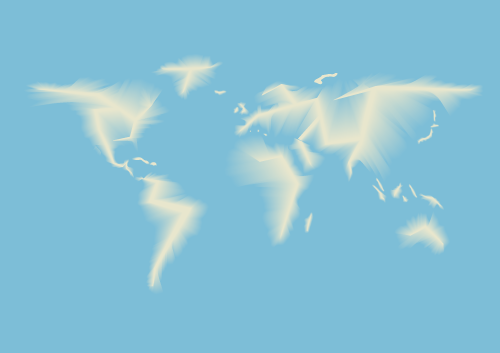

Over the summer of 2014, I worked in the art department of a magazine, and we published stories, some of which required accompaniment by a map. Often I was charged with creating those maps. And while at my desk, in the art department of the magazine, I noticed something … something I had never really considered … something I was kind of astounded by. I saw that maps are all complete and utter lies. Or, well, actually I saw that maps are at best inconsistent, and that challenged my assumptions about how I saw maps and how they are presented and defined. This truth—the subjectivity of maps—undercut something intrinsic and essential about them. And that awakened a suspicion. That suspicion ultimately led me through a process of questioning maps, which in turn led me to the topic that I would spend the last year of my graduate graphic design education on.
It all started with one particular project: an information graphic of Italy. I got a map of Italy and tried to line it up with the source material: I rotated it; I scaled it; I couldn’t get it to align. I got another map and repeated this process to similar and disappointing effect. It wasn’t an issue of scale, where lines and contours get simplified, but rather the coast did not line up, Sicily was in a different spot, and there were fairly obvious inconsistency with Italy’s northern border. So I took a screenshot of Google maps, and I laid one map on top of the other. To my great surprise, they were all different. None of them aligned. This was striking. I was confused. Suddenly I had all these questions: What are maps? Why are they inconsistent? Why do we all consider them to be such concrete representations? I wondered if other people knew about the inconsistency of maps. What was going on? Was this a cover up? Who did cartography’s PR?
I was so curious about these objects that I imagined them in an entirely new way. They were no longer objective, which meant they were subjective and rhetorical. They were a piece of media, which meant they had an effect. So I thought about their form and function; I read about their history and purpose; I studied their methods and techniques. I am a graphic designer. I am concerned with form. I am also a former communications major interested in media and its effects. And what I stumbled upon was something I felt was a fundamental flaw in the construction of maps. If maps are a representation of Earth, they lack one of the most essential dimensions of our planet. They lack motion.
The dynamism of our planet—the space we occupy—is important. I think there is, in contrast, a presumptive rootedness in our schema of our world. There is something static about the image we have in our heads, and I think that maps contribute to that. I decided to spend the next year thinking about graphically representing the dynamism of our world. I wanted to focus on certain dramatic phenomena on the planet that would come alive once I mapped them with motion. I coined a phrase for my redesign of maps: Dynamic Cartography.
My startling discovery of the inconsistencies in maps.
The world of maps was a bit foreign to me. I had committed myself to a field of which I had little technical knowledge. Disoriented but not dissuaded, I waded into the cartographic waters. To transform into a map expert, I began at the beginning: with history. I consulted the oracle that is Google. I had so many questions, and I thought Google would have all the answers. But maps are old, and quickly it became apparent that if I wanted to get to the heart of the cart’, I would have to venture to a place that time has forgotten: the library.
Over the bridge and into the books I went. I checked out every book on mapping and cartography I could find, which in an art-school library turned out to be not that many. I dragged my bounty home and began what I thought would be a ten-second movie montage of me, awash in dusty rays of library sunlight, flying through a flutter of pages, landing softly in instant erudition. Reading and researching are, apparently, incredibly time-consuming, not at all like the movies.
I, like many designers, have a romantic view of revivals and being informed by works from the past. My research brought me face to face with many old maps, which in turn inspired several formal experiments. I noticed that many maps sought to add textures and patterns to their depiction of the seas in order to denote motion and dynamism. I found this intriguing. I toyed with and in a few cases tested the idea of animating old maps that made use of this technique, almost as a fulfillment of an old promise. I also looked at and studied the compositions and color palettes of the different generations of maps. The more I learned, the more apparent how much Design-DNA was in cartography.
Samples of color palettes from historic maps.
What if there were no hard edges on a map?
History pinpointed many interesting intersection between design and cartography, but the most pivotal was during the first part of the twentieth century. Arthur Robinson, a cartographer, geographer and all around looming figure in the history of maps, engineered an influx of design thinking and language into cartographic manuals, due largely to. I had always looked at maps as pieces of design, but I hadn’t expected such a strong shared provenance. There in the pages of Elements of Cartography were the design principles I was taught: point, line, shape, form. And while I didn’t know it then, these categories would prove useful later on in my dynamic endeavor.
While I didn’t regret beginning with history, it didn’t answer all of the burning questions I had. I really needed focus on the current landscape of maps. I was anxious to start designing maps, but I had to marinate more in the cartographic brine.
If you’ve ever tried to secure a new iPhone, you are familiar with this certain state of aggravation. You spend hours of time to achieve paltry results. That’s what this period was like for me. I was frustrated that my research was producing few concrete answers, but I was aware that to clear the forest, I had farther to go. While part of me wanted to hide under the bed, the most practical version of myself stepped up and decided that my days would be best spent getting some questions answered about the how of this project. Time for another movie montage: Picture me at my desk, my laptop’s screen reflected in the lens of my glasses as I scroll through pages of densely ambiguous text, my hair disheveled (but still cute) as I fumble for my latté. Day turns to night; night turns to day. I sit back, toss my hair, and smile. Breakthrough!
I recognized a pattern and organized what I was learning. I started to think of the map information in buckets: form, concept, and content. This schematic helped me to divide and conquer. I paid attention to the content of maps: the tools and data that created them. I went hunting for map data. It was time to return to the oracle.
I just needed some data of the whole world that I could use as the basis for all my maps. Super simple, right? Wrong. Because of my previous research, I knew three things. 1. The U.S. government would have map data. 2. It would be free. 3. It would be hard to find as the U.S. government is leading the world in neither usability nor user experience. The government doing me a solid with map data made me feel patriotic—that is, until I actually got some of it downloaded. I soon learned that while the files were free, the format was not. Much of today’s cartography is done using Geographic Information System (GIS) software. However, the great majority of the work is done using one brand of software in particular: ESRI’s ArcGIS, which is proprietary software that will run you about 7Gs. What’s a poor graduate student to do? Persevere.
After some research, I learned of a free open-source alternative: QGIS. Yes! After downloading it, I discovered it didn’t accept the ESRI file format I had downloaded from the government. No! After yet another period of research, I found a plugin for it that would allow me to open it up. Yes! I was excited and felt like I was picking up momentum.
When I first learned Photoshop and Illustrator, I experienced so many instances in which I tried to do one thing and yet caused something totally unexpected to happen instead. There is an interesting disorientation that happens when you learn a new software. You’re a bit freer and make more mistakes, often with intriguing results. There is also a lot of turmoil from wanting to do something and not having a clue how to do it. Little did I know, I was about to relive this experience with GIS.
I got the software. I got the data. The stars were aligned. And then everything came to a screeching halt. How on earth did this mapping software work? What was this data? Why was it neon pink? As is so often the case with open-source software, the answers lay deep in the depths of someplace dark, someplace I was scared to go: Internet forums.
Navigating forums is like shopping at Century 21: it’s hit or miss (mostly miss) and a little bit dangerous. Sometimes you think you’ve found a solution only to find out you have to download something—a dicey proposition at best. I was often confronted with a dichotomy: potentially solve all my problems or potentially kill my computer. But onward and upward I went, bobbing and weaving through the internet terrain to arrive at proficiency with the software. I began by making what one could only describe as abstract screen paintings, but I ended by making actual maps. It was time to tie some threads together.
It’s kind of obvious why maps are static: until recently we didn’t have the ability to depict them as anything else. But what one can glean from the history of cartography is that governments have a vested interest in maps and that mapping is very much linked with the state.
Maps are tools that serve the state, and, because governments are often the creators and financial backers of maps, along with the associated research that goes into creating one, they tend to be concerned with boundaries and edges. According to Denis Wood, author of The Power of Maps, cartography as the discipline we know today began with the inception of the modern state during the 15th and 16th centuries. It develops out of two seeds: war and claiming your territory. When you look at a map, you are meant to see boundaries. I think this informs the creation of hard edges, especially for water lines. This is your land. This is where it ends. Maps are intrinsic to our conception of today’s state. Political boundaries are one of the forces that drive map-making. The static aspect of maps is also explained by this. Dynamism (or malleability of land or form) is not a virtue to a government seeking to cement its existence on the planet, technological ability aside. And while I wouldn’t argue that there is a conspiracy going on, the context in which mapping activities occur is important, and the depiction of the destruction or the reduction of a land mass is at odds with the benefactors of those maps.
Maps have a few hidden superpowers, too. As Bernard Nietschmann, a UC Berkeley geographer, once noted “more indigenous territory has been claimed by maps than by guns.” I think this highlights how maps have an innate self-actualizing power: by sheer existence, they reinforce themselves as truth. Underlying this is our implicit trust of visual information. Evidence of this is that we still view, on some level, even the oldest of maps as representative of our world, despite their complete inaccuracy. We interact with maps often, we trust them, and that trust is created from years of proven use. In fact, maps are probably the most proliferated and recognizable graphic in the world. But maps are rhetorical as they operate based on a perspective, literally.
It is the combination of their provenance, their static form, their claim to objective truth, and their sheer ubiquity that allows maps to cultivate an attitude about the world as static.
Coastal erosion due to strong winds, high waves and tides, and storm surge conditions that results in portions of a land mass breaking off and sinking into the water.
An increase in the mean level between high and low tide of the surface of the sea.
An abnormal rise of water generated by a storm, over and above the predicted astronomical tide.
I wanted to subvert this stasis, but maps need to show something specific. Our coastlines are in a constant state of flux and thus present a natural place for an exercise in motion. Rising sea levels, tidal swells, and shoreline retreat are three coastal phenomena currently shaping our shorelines. I explored these phenomena with Dynamic Cartography.
I looked at what was already being done, and by and large, the method used to display changes was layering. Push a button, and see the image toggle to another image. This was especially true with sea level rise. The National Oceanic and Atmospheric Administration (NOAA) has clearly put a lot of time, energy, and money into their visualizations: there are 59 tools on their websites (as of writing this). Of them, 27 are layered data viewers. On some level, I think this works, and I think it has potential. But I also wanted to at least provide an alternative to this model because users have to put in work to understand them.
To design most of my maps, I shied away from using vectorized imagery. I thought, in some sense, vectorizing the Earth adds another cognitive layer to unpack before a user can fully interact and understand the material. I also tried to keep the color scheme naturalistic, as an additional link to reality.
One of the things that’s most interested me in my graduate-school studies is coming to understand how our tools shape our work. The GIS software had its limitations, and animation was√ü one of them. It struck me how comfortable we are with representations (almost all of them up until recently) lacking time elements. Maps are frozen moments of our space, and I chose video animations as the medium to first embark on because animation added the 4th dimension of time to maps. None of the mapping tools or data really lent themselves to animation. So once I completed the base maps for the project, I decided to shift software.
I migrated my work into After Effects, video and motion software, and really focused on making and producing. Through a series of experiments, I developed a graphic language, using different techniques, and when critiqued by faculty and classmates, I heard varying opinions on each technique. When I had first conceived my project, I imagined I would come out with a single solution for each phenomena, but I realized that perhaps all the things I was making solved the dynamic problem, just in different ways. I used lines, shapes, and transparency to communicate, and each had value. I considered the different graphic treatments as akin to the different projections of formal cartography, in which you gain or lose certain aspects with each choice.
I sought out more ways to depict these phenomena, eventually steering into 3D modeling. I created two kinds of projections that mimic 3D space. The first creates topography with small pillars. What is fascinating about this is how it is quite literally three-dimensionalized pixels. I think that is such a fascinating statement of how this projection relates the real world to the digital one. The second is a smooth, continuous topographic relief plane. I felt like the 3D really rounded out the project in an interesting and compelling way. Because many of the flat maps had fairly subtle shifts, the extruded forms brought in some more dramatic changes to the set.
The need to classify and categorize my maps grew along with my collection of projections. And ultimately I decided the basic graphic design principles, the ones I had learned so long ago, the ones Robinson described in his book, could serve as a loose method of organization. The sea level rise animations made the most pure use of these and I saw each communicating in different ways. The shape and form pieces were the most dramatic: a land mass is swallowed by color. The extruded form I found very visually appealing, and yet it held a bit of an optical illusion in terms of scale. Line and Transparency both gave users better access to comparing before and after. Transparency created three obvious divisions: where the water was, where the water encroached to, and land, while Line performed this more subtly. As in all design, there is a degree of subjectiveness to what you take away from each method, and to me that is the real strength of this project. I love the idea that this has served as an investigation of what can be used, and that designers and cartographers can take these tools and work with them and on them.
Planning for the exhibition began many months before the installation of it and in tandem with the researching and making. What to do with an exhibition space produced much material for the idea graveyard. There was the water-tank idea, where I would build a fish tank that had a rising and falling sea level. There were giant sheets of glass, jumbo projections, folding walls, and just about every possible thing you could think of to showcase maps.
The exhibition forced me to an important conclusion about my thesis. One of the late, serious contenders for the design of my space was to create and play a film—or trailer, if you will—of what I was doing. I began storyboarding it and writing a script. I made it real in After Effects. It looked fine, good even. It was a solution that would have worked. But the more I thought about it, the more I felt like there was something amiss. Dynamic Cartography wasn’t about an ultimate solution or a neat tidy package. It was about options and comparison, and comparison required something elemental to maps, which was spatial adjacency. The maps needed to be viewed simultaneously, not in sequence. That decision was pivotal for me in terms of how to design the space. Everything flowed fairly smoothly from there and ultimately led me to my final, realized solution.
As I look back at my MICAn experience, I see that I have: banked more Gladwellian hours (toward the 10,000 needed to become an expert) in design; accumulated new outward-facing skills, like wireframing and web languages; and learned as much new software as new theory. But stuff happened to my insides, too: like crippling self-doubt, bouts of psychotic frustration, and besiegement by the where-to-begin bear. There was a humorous irony in feeling lost while making maps, one that ushered me to the understanding that my study of maps was not just a lesson in geographic wayfinding, but self wayfinding too. Getting lost is perhaps a step in finding where you are and Dynamic Cartography served as a guide in the physics of locating yourself, while moving, in a world that too is moving. This project has always been about animation and I mean that in every sense of the word, including: to give life to. I hope and believe that what I have made will live on; that this is a viable and good direction for cartography and design, because the world, the people that occupy it, and the maps that describe it are best when they are in motion.